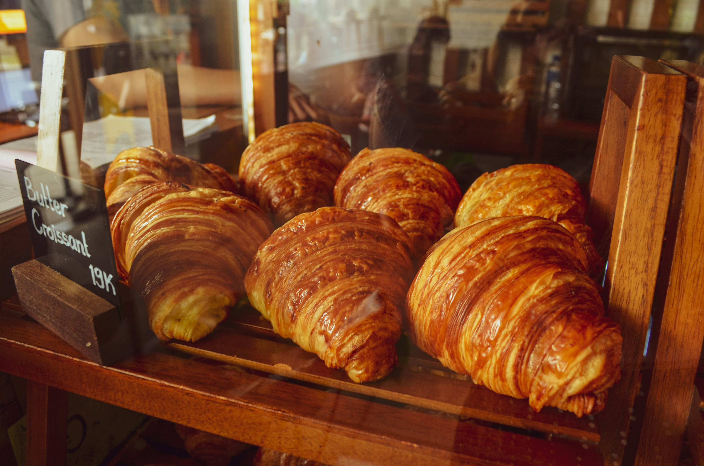

Baking Tips
How to Keep Your Sourdough Starter Alive in Nairobi's Heat
June 3, 2026
Nairobi's warm climate can be tricky for sourdough fermentation. We share the fridge-and-feed schedule we've used for 8 years...
Read MoreRecipes, baking tips, and news from Makeki.
June 3, 2026
Nairobi's warm climate can be tricky for sourdough fermentation. We share the fridge-and-feed schedule we've used for 8 years...
Read MoreMay 18, 2026
Makeki was commissioned to create the centrepiece celebration cake for the annual Nairobi Food Festival at the KICC...
Read More
April 30, 2026
The lamination process for croissants is all about temperature. In Nairobi's warmth we've adapted the French technique with Brookside butter...
Read More
March 12, 2026
Baking at Nairobi's altitude means lower pressure, faster rising, and dry air. Here are the five adjustments we make to every recipe...
Read MoreJune 3, 2026 | By Wanjiku Mwangi
Nairobi sits at 1,795 metres with an average temperature of 19 degrees Celsius. Your kitchen can easily reach 24-26 degrees during the day, which accelerates fermentation dramatically. A starter that takes 12 hours to double in London will double in 4-6 hours here.
We feed our starter every morning at 5 am using a 1:5:5 ratio (starter:flour:water). We keep it in the fridge between feeds and take it out 45 minutes before the morning bake. This cold retard method slows fermentation so you get flavour without over-fermentation.
Ask Us a Baking QuestionMay 18, 2026 | By James Kamau
When the Nairobi Food Festival committee reached out to Makeki Bakery in March, we knew this was a once-in-a-generation opportunity. The brief was simple — create a centrepiece celebration cake for the annual festival at the KICC that would represent the diversity and creativity of Nairobi's food scene.
James Kamau spent three weeks sketching designs before settling on a five-tier sponge cake decorated with edible representations of Nairobi's iconic landmarks — the KICC tower, Uhuru Park, and the Maasai Mara horizon. The cake served over 300 festival guests and received a standing ovation during the unveiling ceremony.
Order a Custom CakeApril 30, 2026 | By Wanjiku Mwangi
The lamination process for croissants is entirely about temperature control. In Nairobi's warm climate, dough warms up quickly which causes the butter layers to melt into the dough rather than staying separate. This destroys the 27 distinct layers that make a croissant flaky.
After experimenting with imported European butters we discovered that Brookside unsalted butter from Kiambu County has a higher melting point that suits Nairobi's temperatures perfectly. We chill our dough between every fold and keep the kitchen at 18 degrees during lamination. The result is a croissant with a shattering crust and a honeycomb interior.
Visit Us to Try OneMarch 12, 2026 | By Wanjiku Mwangi
Nairobi sits at 1,795 metres above sea level. At this altitude atmospheric pressure is lower which means gases expand faster, liquids evaporate more quickly, and baked goods rise faster than they set. The result without adjustment is collapsed cakes, dry muffins and dense bread.
1. Reduce baking powder by 15% — less leavening prevents over-rising and collapsing.
2. Increase liquid by 2 tablespoons per cup — replaces moisture lost to faster evaporation.
3. Raise oven temperature by 10 degrees — helps the structure set before the rise gets out of control.
4. Reduce sugar by 1 tablespoon per cup — sugar weakens structure and needs less at altitude.
5. Add an extra egg — strengthens the batter structure to handle the faster rise.
Ask Us a Baking Question